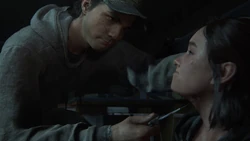

La Porte
Après plusieurs jours à avoir traversé l’État du Wyoming jusqu'à Seattle, Ellie, Dina et Paillette atteignent la périphérie de la ville à la recherche du Front de Libération de Washington. Sur le chemin, Dina tente de comprendre pourquoi Abby Anderson a tué Joel, citant les Cannibales et les contrebandiers de Boston comme de possibles groupes suspects auxquels elle aurait pu appartenir dans le passé. Mais Ellie l'interrompt et préfère attendre d'avoir plus d'informations sur le WLF avant d'émettre des hypothèses.
Elles arrivent enfin près d'une porte massive bloquant l'entrée de l'ancienne zone de quarantaine, avec des soldats de la FEDRA exécutés. Dessus y est indiqué « WLF. Les intrus seront abattus ». Ellie parvient à escalader le mur pour atteindre l'autre côté, et ouvre la porte à Dina et Paillette. En fouillant un peu dans la zone, elle trouve plusieurs papiers d'information, dont un indiquant une planque de la WLF nommé Serevena. En continuant, elles arrivent à une porte où un graffiti « Fuck FEDRA » y est inscrit mais ne peuvent la traverser car le générateur permettant de l'ouvrir manque de carburant. Elles décident alors de continuer vers le centre-ville, espérant en trouver.

Le Centre-ville
Grâce à une note récupérée en chemin, Ellie et Dina parviennent jusqu'au parking du tribunal et au dôme afin de trouver de l'essence. Une fois le carburant récolté, elles poursuivent leur chemin de l'autre côté de la porte « Fuck FEDRA », où le lieu est anormalement désert. Quelques infectés rôdent, mais toujours pas de signe du WLF. Par la même occasion, en croisant d'innombrables tags et banderoles, elles réalisent que les initiales WLF signifient "Wolfes" (loups), d'où leur logo. Puis finalement, elles atteignent l'hôtel Serevena, et trouvent deux hommes morts attachés, qu'Ellie reconnait être Nick, l'un des assaillants de Joel. Elles comprennent alors être sur les traces de Tommy, qui avait quelque temps d'avance sur elles.
L'Ecole
En continuant leur chemin à dos de cheval, elles se font surprendre par une mine déposée par le WLF. Dina est éjectée de Paillette, Ellie tombe à la renverse, et l'un des assaillants exécute le cheval. Ellie est alors emmenée dans les locaux de l'école, attachée à une table. Jordan, l'un des ravisseurs appartenant au groupe d'Abby, vient à sa rencontre et tente de savoir combien elles sont. Mais son collègue, Mike, venait de recevoir des ordres de la part d'Isaac pour l'exécuter. Sur le point de tirer sur Ellie, Dina apparaît soudainement sur la verrière du toit et tue Mike. Jordan riposte alors et brise la vitre, faisant tomber Dina du toit. Il tente de l'étrangler, mais Ellie réussit à se défaire de ses liens, et plante son couteau de le cou de Jordan. En fouillant son cadavre à la recherche d'indices, Ellie récupère une photo et une lettre personnelles. Elles poursuivent alors tant bien que mal vers l'extérieur de l'école, tuant quelques membres du WLF au passage, puis parviennent finalement dans un endroit sécurisé. En lisant la note qu'avait laissé Leah à Jordan, Dina et Ellie savent maintenant où se rendre : à la station télé pour retrouver Leah.
